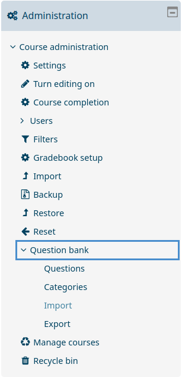

First steps
After setting up Poodle, you can use it as a terminal command with the following arguments:
poodle [OPTION] ... <DATABASE>
Connection options:
-l connects to an already running MongoDB daemon on local
system or starts one manually
-s <ADDRESS> connects to a server hosted at <ADDRESS> running a MongoDB
daemon
Authorization options:
-u <USERNAME> username for authorization; usually only needed when
connecting to server
-p <PASSWORD> password for authorization; only needed when username
option is provided; user will be asked for password input
by prompt if this option is not provided
Miscellaneous options:
-h show this help
The options -l and -s are mandatory and mutually exclusive, meaning that
exactly one of them has to provided any time the poodle command is invoked.
We'll start by simply running poodle -l test. This will launch Poodle locally
and create the database test. When first launching a new database, you are
greeted with the following message:
No question categories specified for database test!
Please input list of categories you want to set for this database
or input 0 if no predetermined categories are desired:
For now, you can simply input 0 and move on. You are now inside your first database which, at this point, does not contain any questions. We'll start by inserting the first question.
Creating a question
Questions in Poodle are basically JSON documents that are saved within the
MongoDB database architecture. Different question types all have their own
characteristics with some common features.1 Initiate the graphical user
interface of Poodle by entering the command gtk_overview(). You should see a
relatively empty window with some columns and a few buttons on the bottom. Press
the New button on the bottom left and press OK in the window that
opens. You can now see the template for a new multiple choice question.
Name this question question01 and fill in all remaining fields. question is the question's text that is displayed to students, correct_answers and false_answers should be obvious, single (0 or 1) determines if students can check one or more multiple answers as correct, points denotes the max amount of points students can achieve for this question, difficulty is a subjective difficulty ranking from 1 (very easy) to 4 (very hard), time_est is the subjective estimated time for question completion in minutes, family_type can be disregarded for now, just enter single, and in_exams can not be filled at this point. You don't need to worry too much about the exact contents of the question.
If you press the Raw tab on the top of the window, you can see what the question looks like at the database level. It might look something like this:
{
"name": "question01",
"question": "This is our first question. Please choose the right answer.",
"family_type": "single",
"moodle_type": "multichoice",
"points": 1,
"in_exams": {},
"time_est": 1,
"difficulty": 1,
"correct_answers": [
"Right"
],
"false_answers": [
"Wrong",
"False",
"Incorrect"
],
"single": 0
}
To save this question, just press Save on the bottom left and answer Yes to the dialog that pops up. You can now close the question's window. The overview should have updated and you should now see your question there.
Creating an exam
There are multiple ways to create a new exam with existing questions. You can either initiate exam creation from within the Questions or the Exams tab. Inside the Questions tab, click on the Add to exam button to add selected questions to the exam, and inside the Exams tab, simply click New. Enter an exam name at the following prompt and press OK. The exam creation window will now open.
On the left side you see a text in field in which question names are entered. Whenever you press the Add to exam button, a selected question's name will be added to this field, but you can also enter question names manually. On the right side are exam metrics which can be manually updated by pushing the Update report button. Once you're done with question selection, hit Create exam, and the new exam will appear within the Exams tab.
Importing an exam to Moodle
When an exam has been created, you will find an XML file at the path
databases/<db-name>/exams/<new-exam-name>/ which contains an XML
representation of all questions within the exam and will be used for import into
Moodle. Once you're logged into Moodle and inside the course to which you want
to add the exam, click on Question bank within the administration panel and
select Import, as seen below.

Select the Moodle XML file format, and drag your XML file into the designated window, afterwards press the Import button. Hit Continue on the following screen and you will see all questions from your exam inside the question bank. You can now use these questions as you would any which had been created inside Moodle.2
Evaluating an exam
nochmal bild